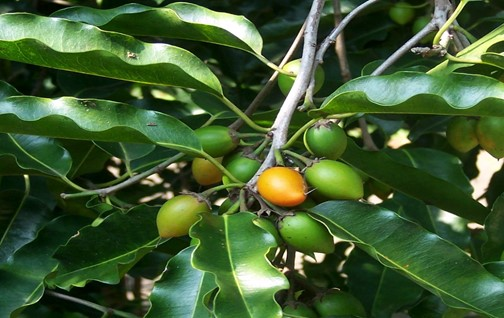

Basonym of Drug
Bakula
Main Synonym
- Madhugandha
- Sinhkesharaka
- Chirapushpa
- Shtreemukha
- Stheerakusuma
Regional Name
- Bengali: Baka
- Gujarati: Borasalli
- Hindi: Moulsiri
- Tamil: Bagulam
- Telugu: Pogada Chettu
Botanical Name
Mimusops elengi Linn.
Family
Sapotaceae
Classification (Gana)
- Bhavprakash Nighantu: Pushpa Varga
- Dhanvantari and Sodhala Nighantu: Amradi Varga
External Morphology
15-20 meter high medium tree
Useful Parts
- Root bark
- Stem bark
- Flower
- Fruit
Important Phytoconstituents
- Quersitol
- Lupeol
- Linoleic acid
- Oleic acid
Rasa Panchak
- Rasa: Kashaya, Katu
- Guna: Guru, Snigdha
- Virya: Shita
- Vipaka: Katu
Action
Kaphapittahara
Therapeutic Indications
- Grahi (decreases over-secretion)
- Hridya (cardiac tonic)
- Dantya (good for dental care)
Therapeutic Uses
- Shirahshoola (headache): Flower juice pours in nostrils (for Nasya) in the headache.
- Dantaroga: Twig of Bakula is useful as a toothbrush for strengthening the teeth and gum.
- Jwara: Stem bark decoction is useful in chronic fever.
Dose
- Decoction: 40-50 ml
- Bark powder: 1 to 3 gm
Formulations
Bakuladhya Taila
Adverse Effect
Not Known
Remedial Measure
Not Required